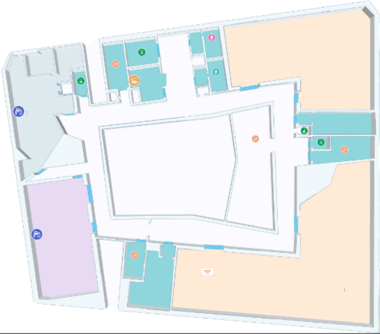

<nz-layout>
    <nz-header class="header">
        <div class="logo">
            
        </div>

    </nz-header>
    <nz-layout class="mainLayout">
        <nz-sider nzWidth="240px" nzTheme="light">
            <ul nz-menu nzMode="inline" class="sider-menu">
                <li nz-menu-item>
                    <a [routerLink]="['/home']">首页</a>
                </li>
                <li nz-submenu nzOpen nzTitle="学生信息">
                    <ul>
                        <li nz-menu-item><a [routerLink]="['/personalFiles']">个人档案</a> </li>
                    </ul>
                </li>
                <li nz-submenu nzOpen nzTitle="情况汇总">
                    <ul>
                        <li nz-menu-item><a [routerLink]="['/workCollect']">出勤汇总</a> </li>
                        <li nz-menu-item><a [routerLink]="['/tempertureCollect']">体温汇总</a> </li>
                        <li nz-menu-item><a [routerLink]="['/heartCollect']">心率汇总</a> </li>
                        <li nz-menu-item><a [routerLink]="['/locationtCollect']">定位汇总</a> </li>
                        <li nz-menu-item><a [routerLink]="['/sportCollect']">运动汇总</a></li>
                        <li nz-menu-item><a [routerLink]="['/environmentCollect']">环境汇总</a></li>
                        <li nz-menu-item><a [routerLink]="['/warnCollect']">告警汇总</a></li>
                    </ul>
                </li>
                <li nz-submenu nzOpen nzTitle="系统日志">
                    <ul>
                        <li nz-menu-item>登录日志</li>

                    </ul>
                </li>
                <li nz-submenu nzOpen nzTitle="组成管理">
                    <ul>
                        <li nz-menu-item>班级架构编辑</li>
                        <li nz-menu-item>课表管理</li>
                        <li nz-menu-item>学校活动管理</li>

                    </ul>
                </li>
                <li nz-submenu nzOpen nzTitle="紧急预案通知">
                    <ul>
                        <li nz-menu-item>火灾、地震演习发布</li>
                        <li nz-menu-item>火灾、地震演紧急预案启动</li>

                    </ul>
                </li>

            </ul>
        </nz-sider>
        <nz-layout class="inner-layout">
            <nz-content class="content1">

                <div class="top">
                    <div class="personNews">
                        <h4>小二1班</h4>
                        <div class="names">
                            <p style="font-size:32px;color: #333;margin: 0;">许小二</p>
                            <p style="text-align: right;color: #1dff8a;font-size: 20px;margin: 0;">在校</p>
                            <span style="color: #8c8c8c;font-size: 18px;">当前状态<br>设备信息</span>
                        </div>
                        <div class="image">

                        </div>

                        <div class="line">

                        </div>

                        <div class="device">
                            <p>设备号&nbsp;&nbsp;153567</p>
                            <p>电量情况&nbsp;&nbsp;<i class="iconfont icon-dianliang"></i></p>
                        </div>

                    </div>
                    <div class="personHeart">
                        <h4>心率</h4>
                        <p>平均心率：80次/分钟</p>
                        <p>最大心率：95次/分钟</p>
                        <div echarts [options]="options" style="height: 110px;width: 100%;">

                        </div>
                    </div>
                    <div class="personInSchool">
                        <h4>出入校记录</h4>
                        <ul>
                            <li>许小二于2020-4-28&nbsp;7:09从<span>学校北门</span>进入 </li>
                            <li>许小二于2020-4-28&nbsp;15:03从<span>学校南门</span>离开 </li>
                            <li>许小二于2020-4-29&nbsp;8:03从<span>学校南门</span>进入 </li>
                            <li>许小二于2020-4-29&nbsp;17:03从<span>学校东门</span>离开 </li>
                        </ul>
                    </div>
                </div>

                <div class="bottom">
                    <div class="location">
                        <div class="left">
                            <h4>实时定位</h4>
                            <p>当前楼层</p>
                            <ul class="floor">
                                <li>F1</li>
                                <li>F2</li>
                                <li>F3</li>
                                <li>F4</li>
                                <li>F5</li>
                            </ul>
                            <p>当前位置</p>
                            <span><i class="iconfont icon-dingwei4" style="font-size: 40px;color: #cc0202;"></i></span>
                        </div>

                        <div class="right">
                            <i class="iconfont icon-dingwei4" style="font-size: 30px;color: #cc0202;"></i>
                            
                        </div>

                    </div>
                    <div class="situation">
                        <div class="sport">
                            <h4>运动情况</h4>
                            <ul class="time">
                                <li>日</li>
                                <li>周</li>
                                <li>月</li>
                            </ul>
                            <div class="step">
                                <p>步数<span style="padding: 0 30px;">:</span>1200 </p>
                            </div>
                            <div class="level">
                                <p>对比昨天<span>+46</span></p>
                                <p>总体评级<span style="color:#1aff89">优</span></p>
                            </div>
                        </div>
                        <div class="temper">
                            <i class="iconfont icon-Thermometer" style="font-size: 100px;color: #f05d5d;"></i>
                            <p>36.8&#176;</p>
                        </div>

                    </div>

                </div>
            </nz-content>

        </nz-layout>

    </nz-layout>
</nz-layout>